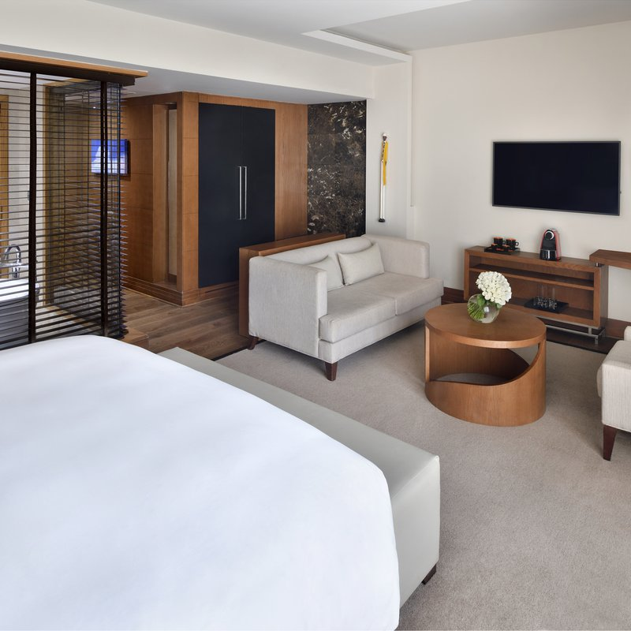

All of our rooms evoke a feeling of comfort and convenience combined with contemporary urban design, charm and high-tech amenities tailored to the business traveller's needs. Our unique rooms feature complimentary WIFI connection, LCD TV, telephone, mini bar, individually adjustable air-conditioning, in-room safe (for laptops), luggage rack, toiletries kit, hair dryer and en-suite bathroom with shower. Extra beds (rollaway or baby cot) are available upon request. All rooms are non-smoking.
Junior Suite Prominently situated at corner sections of the hotel floor, our seven Junior suites benefit from large panoramic windows offering extensive views over the city. Contemporary in design, these suites are decorated to the highest standards in natural tones with rich silks, wood, leather and modern African fabrics. From $228
Our first-class rooms have the following features:
The comprises of the following: